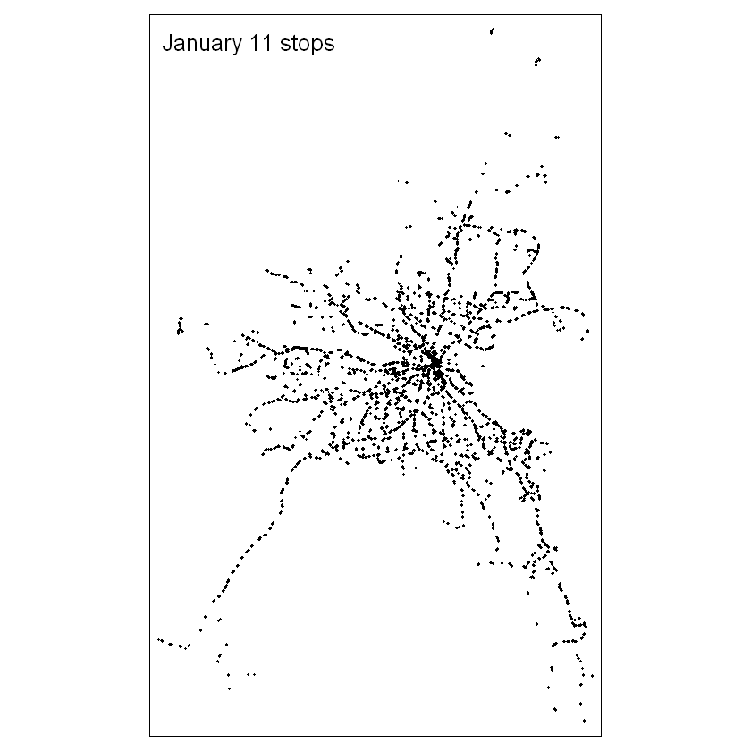
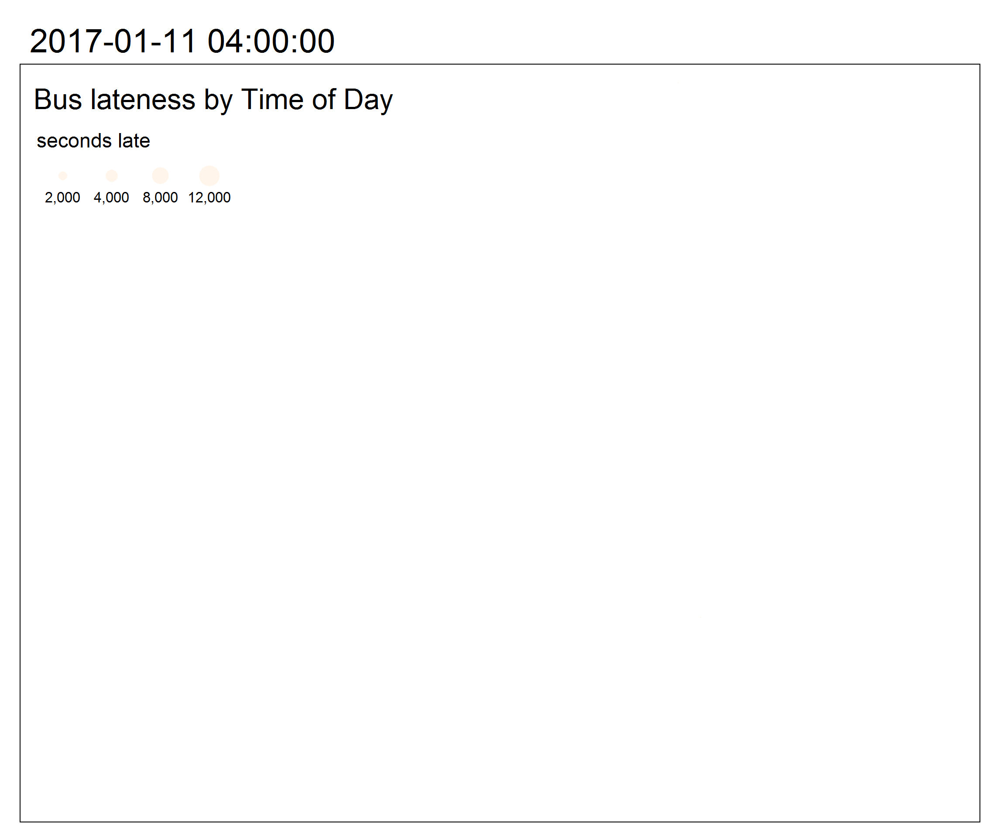

*view this file as a Jupyter notebook*
How late are Dublin busses and where are you more likely to experience them?
Dublin Bus periodically releases some of their vehicle location data as open data on data.smartdublin.ie The AVL data, or Automated Vehicle Location, records the time and location of every stop a bus makes, along with other information such as how long the door was open. Passenger data is unfortantely not available with the AVL system. In addition to actual arrival and departure times from each stop, the includes normal arrival and departure times as per each route's schedule, allowing us to calculate how far off schedule each bus action is.
This script produces an interactive map to look at the amount and timing of peak lateness in the Dublin AVL data. We will use color to show the time of day where busses are most late, and the size of map symbols to show the magnitude of lateness. General spatial patterns emerge which show that some regions of Dublin experience later busses at different parts of the daily commute.
The data is no longer available for download on Smart Dublin's data repository. But I have downloaded a sample from 2017 that used to be available. You can download the folders from my Github here. Each folder is named with the date of the data collected and contains many individual csv files. The files contain all of the information to link vehicles, schedules, routes, stops, etc. We will only use the veh_stops table, which contains a record of each stop made during the course of a day. You may download each folder, or we will use DublinBus_AVL_20170111 - Wednesday, January 11, 2017 - for this demo.
Let's start with the necessary R imports and read the veh_stops.csv file. Note that this Jupyter notebook runs on R version 4.0.0, which is necessary for the animated map at the end.
library(data.table)
library(raster)
library(sp)
library(tmap)
veh_stops <- as.data.frame(read.table("../Data/DublinBus_AVL_20170111/veh_stop.csv",
sep=";",
header=TRUE,
strip.white=TRUE))
head(veh_stops)
This file contains important information about each time a bus stops. The time of day is given in number of seconds since the start of the day and stored in act_arr_time or "actual arrival time" and act_dep_time or "actual departure time." We will compare this time to the nom_dep_time or "normal departure time," which is based on each bus's normal schedule and only works if the location of the stop can be automatically matched to a designated bus stop, to determine if the bus is late. The other fields either provide information about the bus when it stops or allows matching of the stops data with other database files on trips, vehicles, routes, and more.
Exclude entries which do not have location or timing, and calculate a new attribute for number of seconds off-schedule. If the location is NA or 0, or if the normal departure time was not able to be determined, remove those records.
veh_stops <- subset(veh_stops, gps_longitude!=0)
veh_stops <- subset(veh_stops, !is.na(act_dep_time))
veh_stops <- subset(veh_stops, !is.na(nom_dep_time))
veh_stops$off_sched <- veh_stops$act_dep_time - veh_stops$nom_dep_time
head(veh_stops)
Let's make a quick map of the stops made by busses on January 11.
spatial_stops <- veh_stops
coordinates(spatial_stops) <- ~gps_longitude+gps_latitude
tmap_mode('plot')
stops_map <- tm_layout(title="January 11 stops") +
tm_shape(spatial_stops) +
tm_dots()
stops_map

Next, we could simply symbolize this map with the off_sched variable we just created. But since this entire day's worth of data contains many instances of each bus stopping at each stop, the overlapping symbology would be impossible to interpret any meaningful patterns.
Instead, we can summarize the time series into 5-minute chunks and the stop locations into a regular grid, the cells of which approximate the area covered by a single bus stop.
veh_stops <- veh_stops[order(veh_stops$act_dep_time),]
head(veh_stops)
This data is not perfect. At this early in the day - 16234 is around 04:30 - busses should be very close to on-time. One of the stops in this sample is 20 minutes early, according to our calculations. So the way that it matches a stop with its expected time is not always accurate.
Now let's summarize the data on five-minute intervals
# cut each day of arrival times into 5-minute chunks
#3600 = 01:00
#100800 = 04:00 AM the next day
#300 = 5-minute breaks
five_min_breaks <- seq(3600,100800,300)
veh_stops$five_min_factor <- five_min_breaks[findInterval(x=veh_stops$act_dep_time, vec=five_min_breaks)]
veh_stops_split_five_min <- split(veh_stops, veh_stops$five_min_factor)
veh_stops_split_five_min_spatial <- list()
for (five_min_points_i in c(1:length(veh_stops_split_five_min))) {
veh_stops_split_five_min_spatial_once <- veh_stops_split_five_min[[five_min_points_i]]
coordinates(veh_stops_split_five_min_spatial_once) <- ~gps_longitude+gps_latitude
suppressWarnings(veh_stops_split_five_min_spatial[five_min_points_i] <- veh_stops_split_five_min_spatial_once)
}
Create the raster grid from the spatial extent of the bus stop locations and stack the grid cells by time.
Rasterizing the points summarizes all stops within each grid cell by the given field and summary statistics.
min_gps_lat <- min(veh_stops$gps_latitude, na.rm=TRUE)
max_gps_lat <- max(veh_stops$gps_latitude, na.rm=TRUE)
min_gps_lon <- min(veh_stops$gps_longitude, na.rm=TRUE)
max_gps_lon <- max(veh_stops$gps_longitude, na.rm=TRUE)
extent <- extent(c(min_gps_lon - 0.005, max_gps_lon - 0.005,
min_gps_lat - 0.005, max_gps_lat - 0.005))
raster <- raster(extent, nrows=200, ncols=128, vals=0)
five_min_raster_list <- lapply(veh_stops_split_five_min_spatial, FUN=function(x) rasterize(x, raster, field='off_sched', fun=max))
names(five_min_raster_list) <- names(veh_stops_split_five_min)
five_minute_stack <- stack(five_min_raster_list)
five_min_time_series <- values(five_minute_stack)
head(five_min_raster_list)
The nest steps create a time series for each raster cell. The process was slightly modified from the one written by kedziorm on github.
Step 1 - convert the names of the layers in the RasterStack to dates
Step 2 - convert the RasterStack to a data frame
Step 3 - remove raster cells/rows which have all NAs (no busses ever stopped there)
You'll have to change the origin date in line 3 if you use a different day sample
newnames <- lapply(as.POSIXct(as.numeric(as.character(substring(names(five_minute_stack), 2))),
origin="2017-01-11",tz="UTC"),
FUN=function(x) as.POSIXct(x, format="%H:%M:%S"))
rs_frame <- as.data.frame(five_minute_stack, xy=T)
names(rs_frame)[3:ncol(rs_frame)] <- newnames
rs_frame_rownames <- paste(rs_frame[,1], ", ", rs_frame[,2], sep="")
rownames(rs_frame) <- rs_frame_rownames
#remove all rows (raster cells) which have only NA (no busses stopped there)
# minus 2 for x,y columns
#For other rows which have busses at some times and not others, make the NA zero
rs_frame_zeros <- rs_frame[rowSums(is.na(rs_frame)) < ncol(rs_frame)-2,]
rs_frame_zeros[is.na(rs_frame_zeros)] <- 0
head(rs_frame_zeros)
With each row representing a five-minute time series of the maximum lateness of any bus within a grid cell, we can do 2 things. First, let's look at a map of Dublin, representing the time of day where peak lateness occurs, and the extent of that lateness. Then we'll make an animated map of lateness throughout the course of the day.
max_lateness_points <- rs_frame_zeros[,1:2]
#find max lateness across the daily time series
max_by_cell <- apply(rs_frame_zeros[,3:ncol(rs_frame_zeros)], 1, max)
#some of these values are extreme ~34000. Reset bad data to 1 hour late - 3600 seconds
max_by_cell <- pmin(max_by_cell, 3600)
max_lateness_points$max <- max_by_cell
#find the column name (time stamp) of the time with the highest lateness value
# have to convert 0 to NA first avoid 0 as the max when lateness is negative
rs_frame_nas <- rs_frame_zeros
rs_frame_nas[rs_frame_zeros == 0] <- NA
head(rs_frame_nas)
largest_cols <- unlist(as.character(apply(rs_frame_nas[,3:ncol(rs_frame_nas)], 1, FUN = function(x) {which.max(x)})))
max_colname_by_row <- colnames(rs_frame_nas)[as.numeric(largest_cols) + 2]
max_lateness_points$max_time <- as.POSIXct(as.numeric(max_colname_by_row), origin="1970-01-01", tz="UTC")
head(max_lateness_points)
now we can map it - with the size of the dots representing the amount of lateness and the color represent when the peak lateness occurred
coordinates(max_lateness_points) <- ~x+y
tmap_mode('view')
bus_map <- tm_layout(title="Bus lateness by Time of Day") +
tm_shape(max_lateness_points) +
tm_dots(size="max", col="max_time", style="cat", palette='Oranges', legend.show = FALSE)
tmap_leaflet(bus_map)
Despite the overplotting, there are patterns evident if you zoom to certain areas. The largest extent of delays - larger point radii - are on major arteries into and out of the city. There are a few reasons for this pattern. First, high-traffic roads into and out of the city will suffer from delays during morning and evening rush hours. But also, busses which serve these arteries typically will have longer routes, meaning more opportunities to become delayed. So even with high traffic in the city centre, the largest delays are at the ends of major routes.
But it might be easier to see patterns if we mapped delays over time, rather than this snapshot of the maximum extent of lateness.
The five-minute scale that we have used to this point would create a gif with 247 frames, which may be too much for the graphics processing to handle. Let's quickly repeat the temporal aggregation with hourly intervals.
hour_breaks <- seq(3600,100800,3600)
veh_stops$hour_factor <- hour_breaks[findInterval(x=veh_stops$act_dep_time, vec=hour_breaks)]
veh_stops_split_hour <- split(veh_stops, veh_stops$hour_factor)
veh_stops_split_hour_spatial <- list()
for (hour_points_i in c(1:length(veh_stops_split_hour))) {
veh_stops_split_hour_spatial_once <- veh_stops_split_hour[[hour_points_i]]
coordinates(veh_stops_split_hour_spatial_once) <- ~gps_longitude+gps_latitude
suppressWarnings(veh_stops_split_hour_spatial[hour_points_i] <- veh_stops_split_hour_spatial_once)
}
hour_raster_list <- lapply(veh_stops_split_hour_spatial, FUN=function(x) rasterize(x, raster, field='off_sched', fun=max))
names(hour_raster_list) <- names(veh_stops_split_hour)
hour_stack <- stack(hour_raster_list)
hour_time_series <- values(hour_stack)
newnames_hour <- lapply(as.POSIXct(as.numeric(as.character(substring(names(hour_stack), 2))),
origin="2017-01-11",tz="UTC"),
FUN=function(x) as.POSIXct(x, format="%H:%M:%S"))
rs_frame_hour <- as.data.frame(hour_stack, xy=T)
names(rs_frame_hour)[3:ncol(rs_frame_hour)] <- newnames_hour
rs_frame_hour_rownames <- paste(rs_frame_hour[,1], ", ", rs_frame_hour[,2], sep="")
rownames(rs_frame_hour) <- rs_frame_hour_rownames
#remove all rows (raster cells) which have only NA (no busses stopped there)
# minus 2 for x,y columns
#For other rows which have busses at some times and not others, make the NA zero
rs_frame_hour_zeros <- rs_frame_hour[rowSums(is.na(rs_frame_hour)) < ncol(rs_frame_hour)-2,]
rs_frame_hour_nas<- rs_frame_hour_zeros
head(rs_frame_hour_nas)
times_names <- colnames(rs_frame_hour_nas)[-c(1,2)]
long_form <- melt(as.data.table(rs_frame_hour_nas), id.vars=c("x","y"), measure.vars=times_names,
variable.name="time", value.name="seconds late")
long_form$hour <- as.POSIXct(as.numeric(paste(long_form$time)), origin="1970-01-01", tz="UTC")
head(long_form)
long_form <- long_form[!is.na(long_form$'seconds late'),]
long_form_simple <- long_form[-c(23244,23245),] #the last 2 times in the data are extreme lateness outliers
coordinates(long_form_simple) <- ~x+y
tmap_mode('view')
map_anim <- tm_layout(title="Bus lateness by Time of Day") +
tm_shape(long_form_simple) +
tm_dots(size="seconds late", col="time", style="cat", palette='Oranges', legend.show = FALSE) +
tm_facets(along="hour", free.coords = FALSE)
tmap_animation(map_anim, "bus_lateness_animation.gif", loop = TRUE, delay = 100)

This version is an improvement over the previous, overplotted maximum lateness map. Lateness is still represented with the radius of the point, and the time of day is still represented by color. But separating out each hour (each point is the maximum lateness of any bus stopping in the grid cell in that hour) shows that there are ebbs and flows of lateness even in the same areas served by the same busses.
Some locations have more late busses early in the day (particularly South Dublin) while others are much later in the evening rush hour (north and northwest Dublin).
You can even see when a specific bus becomes late, as a string of simliarly-sized points along a roadway stick out from the surrounding points.
You can repeat this analysis with any other date, or aggregate for a larger study period and see if the lateness patterns hold over time (though more aggregation leads to distortion of the lateness calculation - see my analysis of the SWEEP, or Temporal Aggregation Bias ).